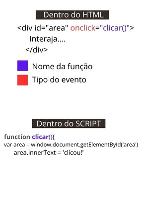
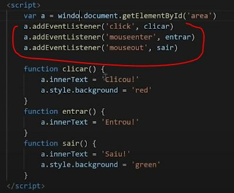

O elemento do execricio é a Div, e o Evento DOM é tudo o que pode acontecer com a DIV.
Exemplo:
Os eventos que podem ocorrer com o Elemento Div acima estão relacionado ao mouse com a DIV
Para aplicar esses eventos é necessário usar funções com o nome da ação e um bloco com os comandos para criar a interação. Exemplo na imagem abaixo:
No elemento em que será aplicado a interação é necessário colocar o tipo de evento desejado, como no caso acima foi inserido o evento onclick (quando clicar) seguido do nome da função que será utilizado dentro do SCRIPT. Resumindo, dentro do elemento div foi inserido o evento onclick e a função chamada de clicar
Dentro do SCRIPT foi inserido a função » function clicar() seguida do bloco {}
Dentro do bloco foi criado a interação. 1º passo foi criado uma variavel chamada area que está recebendo o elemento da div, utilizando a MARCA ID. Note que dentro da DIV foi criado um ID chamado 'area' e o metodo usado para chamar o elemento foi este ID, usando o getElementById
Abaixo pegamos essa variavel que recebou a DIV e aplicamos um innerText, que tem o objetivo de apresentar um texto. O texto recebido foi clicou!
Resumindo: Quando clicar em cima da DIV irá aparecer um texto clicou!
Para não precisar inserir os eventos dentro do elemento no HTML, pode-se inserir eles dentro do script, exemplo:
var area = window.document.getElementById('area')
area.addEventListener('click' , clicar)
Deixa o codigo mais limpo e simplificado. Entenda que foi criado uma variavel que recebeu o elemento DIV usando a MARCA ID e logo abaixo foi adicionado o addEventListener(tipo do evento, função)
para encontrar um erro no código é possivel utilizar o Devtools